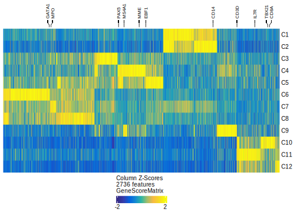
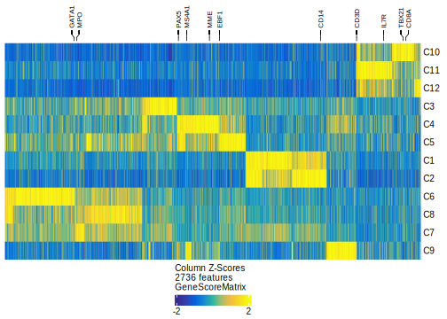

9.3 Identifying Marker Genes
To identify marker genes based on gene scores, we call the getMarkerFeatures() function with useMatrix = "GeneScoreMatrix". We specify that we want to know the cluster-specific features with groupBy = "Clusters" which tells ArchR to use the “Clusters” column in cellColData to stratify cell groups.
markersGS <- getMarkerFeatures(
ArchRProj = projHeme2,
useMatrix = "GeneScoreMatrix",
groupBy = "Clusters",
bias = c("TSSEnrichment", "log10(nFrags)"),
testMethod = "wilcoxon"
)
## ArchR logging to : ArchRLogs/ArchR-getMarkerFeatures-1a140af79ea-Date-2025-01-23_Time-20-16-01.415005.log
## If there is an issue, please report to github with logFile!
## MatrixClass = Sparse.Double.Matrix
## 2025-01-23 20:16:02.335737 : Matching Known Biases, 0.004 mins elapsed.
## ###########
## 2025-01-23 20:17:51.255706 : Completed Pairwise Tests, 1.819 mins elapsed.
## ###########
## ArchR logging successful to : ArchRLogs/ArchR-getMarkerFeatures-1a140af79ea-Date-2025-01-23_Time-20-16-01.415005.logThis function returns a SummarizedExperiment object containing relevant information on the marker features identified. This type of return value is common in ArchR and is one of the key ways that ArchR enables downstream data analysis. SummarizedExperiment objects are similar to a matrix where rows represent features of interest (i.e. genes) and columns represent samples. A SummarizedExperiment object contains one or more assays, each represented by a matrix-like object of numeric data, and metadata that applies to the rows or columns of the assays matrices. It is beyond the scope of this tutorial to dive into SummarizedExperiment objects but check out the bioconductor page if you need more information.
We can get a list of DataFrame objects, one for each of our clusters, containing the relevant marker features using the getMarkers() function:
markerList <- getMarkers(markersGS, cutOff = "FDR <= 0.01 & Log2FC >= 1.25")
markerList$C6
## DataFrame with 460 rows and 9 columns
## seqnames start end strand name idx Log2FC
## <Rle> <integer> <integer> <integer> <character> <integer> <numeric>
## 14724 chr22 33454377 32908540 2 SYN3 266 1.50383
## 7180 chr15 33603177 34158303 1 RYR3 143 1.61610
## 15180 chr3 37493813 37861281 1 ITGA9 190 1.42296
## 730 chr1 47655771 47649261 2 PDZK1IP1 730 2.31953
## 4691 chr12 6055398 5671817 2 ANO2 53 1.66399
## ... ... ... ... ... ... ... ...
## 4722 chr12 6949118 6956557 1 GNB3 84 1.72832
## 12015 chr19 58180303 58190520 1 ZSCAN4 1563 1.30289
## 17723 chr5 135528851 135527156 2 SMIM32 583 1.57534
## 18899 chr6 78173120 78171948 2 HTR1B 740 1.25133
## 22727 chrX 101112549 101087085 2 NXF5 510 1.82215
## FDR MeanDiff
## <numeric> <numeric>
## 14724 1.00235e-28 1.258169
## 7180 1.12058e-22 0.913549
## 15180 6.17469e-21 0.908384
## 730 1.52549e-20 0.758720
## 4691 1.52549e-20 0.588930
## ... ... ...
## 4722 0.00934267 0.2275534
## 12015 0.00940705 0.0876258
## 17723 0.00941627 0.2378894
## 18899 0.00960201 0.4154427
## 22727 0.00987594 0.0780624To visualize all of the marker features simultaneously, we can create a heatmap using the markerHeatmap() function, optionally supplying some marker genes to label on the heatmap via the labelMarkers parameter.
markerGenes <- c(
"CD34", #Early Progenitor
"GATA1", #Erythroid
"PAX5", "MS4A1", "EBF1", "MME", #B-Cell Trajectory
"CD14", "CEBPB", "MPO", #Monocytes
"IRF8",
"CD3D", "CD8A", "TBX21", "IL7R" #TCells
)
heatmapGS <- markerHeatmap(
seMarker = markersGS,
cutOff = "FDR <= 0.01 & Log2FC >= 1.25",
labelMarkers = markerGenes,
transpose = TRUE
)
## Warning in markerHeatmap(seMarker = markersGS, cutOff = "FDR <= 0.01 & Log2FC >= 1.25", : 'markerHeatmap' is deprecated.
## Use 'plotMarkerHeatmap' instead.
## See help("Deprecated")
## ArchR logging to : ArchRLogs/ArchR-plotMarkerHeatmap-1a168e860a9-Date-2025-01-23_Time-20-17-52.300759.log
## If there is an issue, please report to github with logFile!
## Printing Top Marker Genes:
## C1:
## LOC100288069, RBP7, ARHGEF10L, CELA3A, LINC01226, C1orf185, ZFYVE9, MIR1262, F3, HSD3BP4, SRGAP2D, SNX27, S100A9, FCGR2C, MIR556
## C2:
## PERM1, RHD, FGR, PPIEL, BTBD19, TCTEX1D4, L1TD1, MIR3671, GPR88, CASQ2, NHLH2, SLC22A15, IGSF3, FCGR1CP, LINC00869
## C3:
## FAM131C, PLA2G5, IFNLR1, NCMAP, TSPAN1, TTC39A, SLC25A3P1, GBP1P1, GFI1, LOC100129046, S100A4, S100A16, BCAN, FCRL5, FCRL4
## C4:
## LINC01342, MAD2L2, LDLRAP1, ITGB3BP, PGM1, ROR1, TTC24, FCRLB, MIR1231, KLHDC8A, LYPLAL1, PGBD5, OPN3, OR2L13, ZNF22
## C5:
## TTLL10, KAZN, TFAP2E, RIMS3, TRABD2B, PGLYRP3, UCK2, TNR, KIAA1614, LEMD1, SERTAD4-AS1, CCDC3, DEPP1, PRKG1-AS1, SH2D4B
## C6:
## PAX7, RPS14P3, FAM43B, MIR378F, GRHL3, TRIM63, GJA4, RHBDL2, PPIE, MPL, PDZK1IP1, FOXE3, DNAJC6, OLFM3, PHTF1
## C7:
## CFAP74, MIR34A, DMRTB1, MGAT4EP, LOC148709, EIF5AL1, RASSF10, SLC6A5, MIR4488, LRRC10B, SHANK2-AS1, CACNA1C-AS4, DCLK1, HTR2A, LRRC36
## C8:
## LINC02593, PRDM16, MIR4251, MIR4689, TMEM51-AS1, PADI3, NBL1, RAP1GAP, LDLRAD2, HSPG2, MIR4253, CATSPER4, FAM229A, EPHA10, EDN2
## C9:
## ID3, CNR2, BEND5, SHISAL2A, CLCA3P, LOC729970, TMEM56, MFSD14A, LRRC39, SLC16A4, DRAM2, PIFO, FCRL3, FCRL2, DNM3OS
## C10:
## MMP23B, RUNX3, IL12RB2, GBP2, GBP5, LOC729930, TGFBR3, VCAM1, HIST2H2BA, FCGR1B, CD160, PDZK1, SH2D2A, NTRK1, PYHIN1
## C11:
## RCAN3AS, CRYBG2, PPP1R8, LCK, HOOK1, SYDE2, SNORD21, CHI3L2, CD2, HSPA7, BLZF1, SELL, RNU6-72P, PRKCQ-AS1, TAF3
## C12:
## SNORA59B, C1orf194, AMIGO1, GPR61, CRABP2, GAS5-AS1, POLR2G, ZPR1, RPL13P5, PIP4K2C, DTX3, LINC02291, MTRNR2L4, TNK1, HOXB2
## Identified 2736 markers!
## [1] "CD34" "GATA1" "PAX5" "MS4A1" "EBF1" "MME" "CD14" "CEBPB" "MPO"
## [10] "IRF8" "CD3D" "CD8A" "TBX21" "IL7R"
## Adding Annotations..
## Preparing Main Heatmap..
## 'magick' package is suggested to install to give better rasterization.
##
## Set `ht_opt$message = FALSE` to turn off this message.
## ArchR logging successful to : ArchRLogs/ArchR-plotMarkerHeatmap-1a168e860a9-Date-2025-01-23_Time-20-17-52.300759.logTo plot this heatmap, we can use the ComplexHeatmap::draw() function because the heatmapGS object is actually a list of heatmaps:

Many heatmaps in ArchR utilize the ComplexHeatmap package which provides a very versatile and flexible framework for plotting heatmaps. If you need to change something about how the heatmap looks when plotted, you should consult the documentation for ComplexHeatmap. For example, if you want to change the order in which the heatmap rows are plotted, you can edit the row_order slot of the heatmap object and re-plot it:
heatmapGS@row_order <- c(10,11,12,3,4,5,1,2,6,8,7,9)
ComplexHeatmap::draw(heatmapGS, heatmap_legend_side = "bot", annotation_legend_side = "bot")
To save an editable vectorized version of this plot, we use plotPDF().